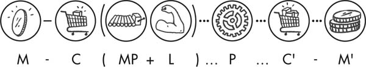

WHERE DO PROFITS COME FROM?
The product [of labor] is the property of the capitalist and not that of the worker, its immediate producer. Suppose that a capitalist pays for a day’s worth of labor-power; then the right to use that power for a day belongs to him, just as much as the right to use any other commodity, such as a horse that he has hired for the day… The product of this process belongs to him just as much as the wine which is the product of the process of fermentation going on in his cellar.
—Capital, Volume 11
REAL WORLD EXCHANGE
Up to now we’ve discussed commodities and values in a simplified world where furniture makers meet bread makers in a market. Happily, the furniture maker takes her chair to the market and exchanges it for money, which she uses to buy bread or other necessities.
Of course, this is not how things work in our society. Today, the people who produce commodities, by and large, do not own what they’ve made and therefore they have no power to sell or directly exchange these commodities for other essentials. In fact, most furniture makers are not really “furniture makers,” in the sense that they don’t make a chair from start to finish, but are lumber handlers, machine operators, assemblers, and finishers who work collectively at a factory. And at the end of the day, they don’t take home the chairs they’ve made; they return home with a paycheck.
The finished products are not owned by these various laborers, but by the furniture company, which put them to work manufacturing chairs. This company then exchanges the chairs on the market for money, which—as we noted—acts as an intermediary representative of value. And while there may still be some local marketplaces, or online venues facilitated by companies like Etsy in which small numbers of artisans craft their own chairs to sell, you’d be hard-pressed to find an individual constructing phones, refrigerators, cars, or the myriad of things that we depend on and which fill our everyday lives.
How did this come about? Answering this question leads us to the crux of the system: exploitation, and the special role played by labor under capitalism. In this chapter, we’ll unpack what Marx meant by CAPITAL, labor, and class society, and out of these concepts we will build a framework for understanding the particular form that exploitation takes in a capitalist society.
To start, let’s look at what makes capitalist exchange unique. In a sense, the “simple commodity exchange” we described above never existed in quite so simple a form. But in pre-capitalist formations, exchanges between communities or individuals were “simple” in the sense that the point of these exchanges was to trade commensurate items. Communities could trade any surpluses they had accumulated in order to obtain different goods of equal value. A tribe could, for instance, trade their surplus of kola nuts for another tribe’s iron rods for tool making.2 This type of direct barter could take place among individuals as well.
Commodity for commodity, or “C–C,” represents this basic bartered exchange—say, exchanging a chair for an equivalent value of bread. The more likely scenario would involve money as an intermediary, but the process remains the same. A commodity of one value is traded in for cash, which can then be exchanged for a commodity of a similar value. We can represent these exchanges with the formula: C-M-C: Commodity, C, is exchanged for Money, M, which in turn buys a different Commodity, C.
Marx uses this formula to express simple commodity exchange, which implies that goods exchange for their equivalents. If a chair maker sells her chair for $30, she should be able to get an amount of meat for her $30 that is roughly equivalent in value (or the labor-time that went into producing it). In this setup, no one is extracting more value than what they put in—it is only the form of the value that is changing: from commodity, to money, to another commodity. Everything equals out. Therefore “chair = $30 = 7 lbs. of beef” is the same as saying “$30 = $30 = $30” or “x hours of labor = x hours of labor = x hours of labor.”
This is a theoretical example that simplifies the process of exchange in order to better elucidate the processes of capital.3 The point to note is that the goal of such an exchange is qualitative (gaining new use-values) rather than quantitative (making money). The purpose is to procure a different item, which you did not possess before.
The development of professional traders transformed the goal of exchange from the procurement of like items for use to the accumulation of money. The equation thus changed from C-M-C to M-C-M; or more accurately M-C-M’. The doohickey above the M (“M prime,” technically speaking) represents more money, or an increase of value above and beyond the money initially invested. In pre-capitalist societies, the basis for this added wealth was, more often than not, pilfering loot. Merchants from more economically developed centers were able to take advantage of societies that did not rely on large-scale internal trade. They could thus purchase goods on the cheap, and then sell them at a higher price in places where these goods were scarce and their values unknown.

Not surprisingly, while the merchant class grew and developed, stories from around the world during this time emphasize the thievery, dishonesty, and piracy found at the source of the wealthy man’s riches. Yet for all this piracy, the circulation of money, wrote Mandel, “is sterile from a global point of view; it does not increase the total wealth of human society. It consists in fact of a transfer of wealth, pure and simple; what one gains the other loses, in absolute value. Social value remains unchanged.”4
THE HIDDEN ABODE OF PRODUCTION
Modern capitalism, on the other hand, is characterized by an immense expansion of wealth. Its entire history is marked by growth. The US economy, when healthy, grows by about 4 percent per year. The Chinese economy, until recently, was growing by as much as 10 percent per year. And the world economy as a whole has expanded by roughly 3 percent annually since 1980, according to data from the World Bank. In fact, if any country’s output stops expanding, it goes into recession.
How do capitalists generate this ever-expanding surplus? Like the merchant class that preceded them, capitalists produce and exchange goods through an M-C-M’ circuit. They start with money (M), invest in the production of commodities (C), and then sell those commodities on the market to get back more money than they started with, (M’). Marx referred to this as “the general formula of capital.” Rather than money serving an intermediary role, it is the driver of the process.

Capitalists don’t exchange goods for the sake of qualitative enrichment. Steve Jobs didn’t decide he had more iPhones and MacBooks than he reasonably needed and therefore might as well trade them for something he didn’t have. (What didn’t Steve Jobs have?) A capitalist invests for the sole purpose of accruing further wealth. To exchange like-for-like items and wind up with the same amount of money that they started with would be, to use Marx’s words, “absurd and empty.” The purpose of exchange is the accumulation of extra value, or SURPLUS VALUE, which forms the basis of capitalist profit. As Marx argued:
The simple circulation of commodities—selling in order to buy—is a means to a final goal which lies outside circulation, namely the appropriation of use-values, the satisfaction of needs. As against this, the circulation of money as capital is an end in itself, for the valorization of value takes place only within this constantly renewed movement. The movement of capital is therefore limitless.5
The satisfaction of even the most extravagant of needs can only go so far. But the boundless goal of acquiring money through its circulation is an inexhaustible endeavor.
But unlike mercantilism, modern capitalism doesn’t depend on a process of “buying cheap and selling dear.” Surplus value is produced when capitalists are buying goods for their true value and selling them for their true value. Capitalists may certainly defraud other players along the way—pay less for inputs or charge more for the final product. But surplus is produced without that duplicity occurring, even when the system is at its most “honest” and “lawful.”
Rather than being cunning in the market, the key to surplus value is a production process that creates more wealth than it begins with. Contrary to mainstream explanations (see sidebar: “How Capitalism Explains Capital”), capitalist surplus is not generated within the realm of exchange at all. It is created, argued Marx, within “the hidden abode of production on whose threshold there hangs the notice ‘No admittance except on business.’ Here we shall see, not only how capital produces, but how capital is itself produced. The secret of profit-making must at last be laid bare.”6
Wherein lies the secret? Let’s look more closely at the circuit of capital. The merchant bought commodities that had already been produced and then sold them for a higher price. However, the capitalist invests not in finished products, but rather purchases two different types of commodities: 1) means of production (MP), and 2) labor-power (L). As we discussed in chapter one, the means of production are the tools and materials that are necessary to make goods (e.g. factories, office buildings, land, machinery, software, IT infrastructure, etc.). The capitalist employs both “inputs” in a production process (P) that creates a new set of commodities, worth more than the combined value of the original inputs. The circuit of capital can thus be expanded to a more precise formula: M-C (MP+L) … P … C’-M’.7

The “secret” hidden within the production process lies in a special commodity of labor-power—the ability to work. Marx explained that the ability to work has become a commodity under capitalism, which the capitalist buys in exchange for a wage (its exchange-value). At first look, this seems self-evident. We wake up, go to work, come home with a wage (or at least the promise of one to be paid at the end of the pay period). We are selling our ability to work—our labor-power. And since selling our old Beanie Baby collection will only get us so far, by and large, for most of us, if we are “lucky” enough to be considered employable, our labor-power is the only commodity we really have to sell.
But what makes this commodity special, and to whom? Marx wrote:
In order to extract value out of the consumption of a commodity, our friend the money-owner must be lucky enough to find within the sphere of circulation, on the market, a commodity whose use-value possesses the peculiar property of being a source of value, whose actual consumption, therefore is itself an objectification of labor, hence a creation of value. The possessor of money does find such a special commodity on the market: the capacity for labor, in other words labor-power.8 [emphasis added]
The exchange-value of labor-power is paid out in a wage. But the use-value of labor-power is labor itself—the source of value, as we discussed in chapter two. What’s more, the exchange-value of labor-power, and the value that labor then produces for the bosses, are two very different things. The worker is paid one thing, but then will normally create much more value during her shift than she is paid:
The value of labor-power, and the value which that labor-power valorizes in the labor-process, are two entirely different magnitudes; and this difference was what the capitalist had in mind when he was purchasing the labor-power…. What was really decisive for him was the specific use-value which this commodity possesses of being a source not only of value, but of more value than it has itself. This is the specific service that the capitalist expects from labor-power, and in this transaction he acts in accordance with the eternal laws of commodity-exchange.9
The key to this golden egg arrangement for the boss is an agreement in which your labor is put under his control for a set amount of time, and you are paid for this time, not for the fruits of your labor. Just as a baker parts with the use-value of bread once she sells it, so too does the worker part with the use-value of her labor-power once she has sold it. As soon as she punches the clock, the conditions of her labor and the products of her labor are no longer hers, but the boss’s. Marx thus continued:
In fact, the seller of labor-power, like the seller of any other commodity, realizes its exchange-value, and alienates its use-value. He cannot take the one without giving the other. The use-value of labor-power, in other words labor, belongs just as little to its seller, as the use-value of oil after it has been sold belongs to the dealer who has sold it. The owner of the money has paid the value of a day’s labor-power; he therefore has the use of it for a day, a day’s labor belongs to him. On the one hand the daily sustenance of labor-power costs only half a day’s labor, while on the other hand the very same labor-power can remain effective, can work, during a whole day, and consequently the value which its use during one day creates is double what he pays for that use; this circumstance is a piece of good luck for the buyer, but by no means an injustice towards the seller.10 [emphasis added]
In other words, the boss can get away with paying you for just half (or some other fraction) of the day for the “daily sustenance of labor-power” while reaping the full day of your labor. On top of it, he can proclaim it a fair day’s wage, and the secret to this claim is in the determination of exchange-value of labor-power. Marx explained: “The value of labor-power is determined by the value of the means of subsistence habitually required by the average worker.”11 That is to say, its value, like that of any other commodity, is based on the amount of labor that has gone into producing it. In the case of labor-power, this amounts to the labor-time required to keep the worker alive, to daily reproduce her capacity and readiness to go to work every day, and to keep her children alive, so that they may one day replace her in the workforce. The value of food, rent, clothing, training, and education, along with other necessities deemed essential by society therefore make up the value of labor-power. If, for example, social norms attach an average of $120 to the cost of minimal daily needs, that would loosely translate into the value of labor-power.12
The bosses also get a big discount when they purchase labor-power. A good deal of unpaid work also contributes heavily toward its reproduction: for instance, childbirth, childcare, food preparation, laundry, and household cleaning, to name a few. As Marxist feminist Tithi Bhattacharya explained, “The working class doesn’t only work in its workplace. A woman worker also sleeps in her home, her children play in the public park and go to the local school, and sometimes she asks her retired mother to help out with the cooking. In other words, the major functions of reproducing the working class take place outside the workplace.”13 The free labor, performed largely by women within the home, is not accounted for within labor-power’s exchange-value. The realm of social reproduction, as discussed in the sidebar “Outside the Abode of Production,” reproduces and regenerates workers at very little cost to the system.
Yet even if we limit ourselves more narrowly to the paid labor that goes into producing your subsistence, if all things were fair and just, you would give over to your boss only the amount of time that it takes to reproduce the value of your labor-power. Say it takes four hours to produce $120 worth of goods, the equivalent of your daily wage, you could go home after four hours. But if your boss allowed that, his inputs and outputs would be equal. It truly would just be M-C-M. What would be the point? Why not just keep the money he started with? But all things are not fair and just. The capitalist pays you for the cost of your labor-power, not for the value of the goods you produce. Thus your paycheck is worth the exchange-value of your labor-power. But the use-value of your labor-power is the production of greater value.
Let’s say you work for Starbucks and they pay you $120 for an 8-hour shift. But you can probably make $120 worth of fancy coffee in an hour, or probably in a half hour at a busy store. Even once you subtract the cost of materials and use of the equipment, Starbucks doesn’t pay you anywhere near the value you’ve created (hundreds of dollars a day). They buy your labor-power from you, not the actual fruits of your labor. And you make that value back for them in an hour. The rest of your shift, you’re basically working for free!
This extra labor they extract from us is called surplus labor. While necessary labor is that part of the day required to reproduce the cost of labor-power, the surplus labor is the free labor that the capitalist benefits from during the rest of your workday. Thus, if after you finish making $120 worth of coffee, instead of throwing down your apron and going home, you finish out your eight-hour shift, one hour will be necessary labor, and seven hours are surplus labor! (This seven to one ratio is overly simplified because it doesn’t yet factor in the machinery and equipment we mentioned above. But we will get to those next!) Marx wrote:
I call the portion of the working day during which this reproduction takes place necessary labor-time, and the labor expended during that time necessary labor; necessary for the worker, because independent of the particular social form of his labor; necessary for capital and the capitalist world, because the continued existence of the worker is the basis of that world.
During the second period of the labor process, that in which his labor is no longer necessary labor, the worker does indeed expend labor-power, he does work, but his labor is no longer necessary labor, and he creates no value for himself. He creates surplus value which, for the capitalist, has all the charms of something created out of nothing.14
In this way, through the “charm of something created out of nothing,” capitalism disguises a process of exploitation, of appropriating surplus labor from the working class, as a “fair day’s wage for a fair day’s work.” As we discussed in chapter one, appropriating surpluses was a visible and obvious norm of previous class societies. But in examining capitalist society, we have to go beneath the surface appearance of a “fair day’s work,” to find the inner essence of exploitation.15
HOW CAPITALISM EXPLAINS CAPITAL
Mainstream economists have a number of ways that they explain how capitalists turn a profit.
As we discussed in chapter two, the predominant mainstream explanation is based on the neoclassical theory of marginalism. In this view, profits are generated in the market, not in production. When capital has a “high marginal product,” if the demand for goods generates a higher income per unit than the cost of producing those goods, then profits are high. When labor has a “high marginal product,” wages rise and profits are low. This clearly pits bosses versus workers, but unlike the labor theory of value, this view sees workers as parasitic—a necessary evil and a drain on profits when they become too expensive. In this model, their labor plays no role in the success or failure of a business. And profits are determined by what’s happening in the market.
Another version of this argument is that the final goods don’t have any additional or surplus value whatsoever compared to the value of their inputs. Instead, the fact that items can be sold for a greater amount of money than it took to produce them is the result of shrewd buying and selling. The profit created is the result of keen investing—by a capitalist that can pay workers minimally and buy raw materials on the cheap, and then find a way to mark up the price on the final product.
This is a convenient explanation for capitalists because it means that profits are the result of the genius of bosses, a good justification for paying themselves ungodly sums of money. But where this argument fails is that it implies that every sale must have winners and losers. A car manufacturer would benefit by buying materials and parts from suppliers at cut-rate prices. But the suppliers must then lose out, having sold materials for below their worth.
Say, for example, that steel plates are worth $750 a ton. This is the average price paid throughout the market for steel plates by all steel producers and all buyers of steel plates. But our savvy automaker investor is able to cut a deal with their supplier to pay just $650 a ton. That steel is used in the production process and becomes part of the car. Additionally, our automaker, when figuring out the price of the car, prorates the cost of steel in each car at a price of $800 a ton.
But by doing this, our investor hasn’t created $150 of new value. All that has happened is that he has stolen $100 from the steel manufacturer and $50 from the car buyer. He has been able to buy something worth $750 for $650. And he’s been able to sell something worth $750 for $800. In the process, he is $150 richer, but it has come by taking advantage of other parties.
Plenty of good, old-fashioned fleecing such as this happens in the market economy.16 And historically it was the basis for mercantilism, an early predecessor of modern capitalism. But at the end of the day, this model would not add money or value. It has simply been redistributed, with the automaker benefiting at the expense of the steel manufacturer and the consumer. One section of society has defrauded another.
If this defined how capitalism worked, our less savvy suppliers would have no profits and be forced out of business, unless somewhere in their production process they, too, were buying their inputs cheaply and marking up the price of their outputs. (But that would merely mean some other company involved in the production of steel was in the position of having no profits and would be forced to shut down.)
So the idea of profits being generated by “buying as cheaply possible and selling as dear as possible,” fails to explain how the system itself can expand. It denies the reality of capitalism, which is constantly growing in wealth and outputs. If it were just about keen buying and selling, there would be a constant process of roughly half of businesses succeeding while the other half were failing, and no new value being generated.
This explanation also oddly precludes a scenario where the majority of capitalists are turning a profit. In reality, when the auto industry is humming, all of the companies that are involved in the production of cars and in parts supply profit simultaneously. In times of economic boom, investment, employment, and profits all ride high, bosses grow elated, “miracle economies” are declared, and economists proclaim that the days of economic busts are over.
Yet another argument is that profits are a reward to investors for putting their capital “at risk.” The logic here is that capitalists are putting up the capital and tying it up into a production process for which they will not be paid back quickly (or perhaps at all). Profit therefore provides incentive to the capitalist for taking this risk rather than sitting on their money, thus the rate of return should be higher than if the capitalist safely tucked their capital away in a low-interest savings account. This explanation essentially equates capitalism with gambling. If a gambler wins at a hand of cards, is this too a profit that is the reward for his risk? Or is it merely the result of someone else losing money? Similarly, if profits are the reward for taking risk, doesn’t it imply that there is—somewhere—a loser in the transaction?
The Marxist understanding of capitalism reveals, however, that surplus value is produced when capitalists are buying goods for their true value and selling them for their true value. It illustrates that surplus value, and therefore profits, are rooted in the production process—in the difference between paid and unpaid labor—not in the cunning of market-based exchanges.
DEFINING CAPITAL
Marx called the capital invested in labor-power VARIABLE CAPITAL because it “both reproduces the equivalent of its own value, and also produces an excess, a surplus value, which may itself vary, may be more or less according to circumstances.”17 Labor’s use-value is “a source not only of value, but of more value than it has itself.” That is, its value expands through its use. But how much extra value is produced can vary, as we’ll discuss below.
Money advanced to purchase equipment and materials, however, passes its value on to the newly created goods without any quantitative change in its worth. Marx called this part of the capitalist’s investment CONSTANT CAPITAL. Its value “merely reappears” in the commodities produced.18 As we discussed in chapter two, the inputs of machinery, resources, and tools embody generations of DEAD LABOR manufactured by previous groups of workers. This value is transmitted as is through the production process. Raw materials transfer their total value when they are consumed by production (Marx called this “productive consumption” of the means of production). Machinery and equipment, on the other hand, pass on fractions of their value during every use. Let’s say a piece of machinery was expected to last for a year before breaking down, and it cost the capitalist $365 when he purchased it. Every day, the machine would pass on a dollar’s worth of value. In this way, argued Marx, it enters “piecemeal in proportion to its average daily depreciation.”19
A machine can deteriorate physically, through wear and tear as it’s used. Or it can eventually be consumed by the elements while it sits on a shelf unused. “But in addition to the material wear and tear,” Marx pointed out, “a machine also undergoes what we might call a moral depreciation. It loses exchange-value, either because machines of the same sort are being produced more cheaply than it was, or because better machines are entering into competition with it. In both cases, however young and full of life the machine may be, its value is no longer determined by the necessary labor-time actually objectified in it, but the labor-time necessary to reproduce either it or the better machine. It has therefore been devalued to a greater or lesser extent.”20 [emphasis added] For example, a tractor may lose its value over time through rust and wear of its body in a physical depreciation. Or it can lose value in a “moral depreciation” once newer lines of tractors equipped with wireless maps and monitors of machine data can do more work for the same price. An agricultural company that uses outdated machinery will incur losses because it will require greater time (and therefore higher costs) to do the same amount of work as its competitor.
If we return to Starbucks, perhaps the executives there invest $360 a day in constant capital: a store’s espresso machines, coffee grinders, refrigerators, dishwashers, cash registers, coffee beans, milk, cream, sugar, etc. The coffee beans and other raw materials pass on the whole of their value as they are consumed. The machinery passes on fractions of its value during every use (which will eventually add up to the full value of the machine getting passed on during its lifetime). They invest another $120 worth of variable capital in employing the store’s barista. This barista, for her meager paycheck, sets to work on the coffee grinders and espresso machines, producing the first $120 of lattes, cappuccinos, and caramel macchiatos in the first hour, enough to cover her paycheck. She produces another $840 of drinks in the next seven hours, for a total of $960 worth of drinks. After paying out wages and expenses, an extra $480 is left.
By investing in constant (c) and variable (v) capital, the capitalists set in motion a productive process. At the end of the process these values will have replicated themselves, along with an additional surplus value (s). Marx expressed this with the formula: c + v -> c + v + s. In the case of our made-up Starbucks example, this would be $360 (c) + $120 (v) turns into $360 (c) + $120 (v) + $480 (s).

The RATE OF SURPLUS VALUE measures the rate at which we are exploited (synonymous with RATE OF EXPLOITATION). It is the ratio between that part of the day that creates the value of your wages (v), and that part of the day in which your labor is unpaid (s): in this case $480 (s)/ $120 (v) is 400 percent.21
If a 400 percent rate of exploitation seems far fetched to you, consider this real-life example quoted in a 2018 Oxfam report. Oxfam interviewed Lan, a Vietnamese garment worker who explained:
When I got pregnant, they let me work in the warehouse. There were many boxes full of shoes, and my job was to put the stamp on. Those shoes would fit my son perfectly, they are very nice. I’d like my son to have shoes like these, but he can’t. I think he’d want them, and I feel sorry for him. The shoes are very pretty. You know that one pair of shoes that we make is valued more than our whole month’s salary.22
Finally, while the rate of surplus value importantly tells us the rate at which we are being exploited, what the capitalist ultimately cares about is his rate of profit. The RATE OF PROFIT is defined as the ratio of surplus value to variable and constant capital: that is the total amount of capital that was invested. It tells him how much profit he is generating relative to the capital he advanced. In our example $480 (s)/ $ 480 (c+v) is 100%.23 We’ll return to this important concept in later chapters.
For the time being, we can see that capital is money that is invested in labor-power (variable capital) and materials and equipment (constant capital) in order to produce a commodity whose sale generates a greater quantity of money. It is a self-expansion of value. Marx distinguished again between the appearance of capital, which alternates, through the course of its life between capital as money and capital as commodities, and the essence of capital, which undergoes a process of self-expansion. He wrote:
If we pin down the specific forms of appearance assumed in turn by self-valorizing value in the course of its life, we reach the following elucidation: capital is money, capital is commodities. In truth, however, value is here the subject of a process in which, while constantly assuming the form in turn of money and commodities, it changes its own magnitude, throws off surplus value from itself … and thus valorizes itself independently. For the movement in the course of which it adds surplus value is its own movement, its valorization is therefore self-valorization. By virtue of being value, it has acquired the occult ability to add value to itself. It brings forth living offspring, or at least lays golden eggs.24 [emphasis added]
But these golden eggs can only be laid because of capitalism’s particular social relation of production, forged through the historical processes we discussed in chapter one. Workers’ lack of control over the means of production makes us dependent on capital. We are coerced by the threat of poverty to sell the only commodity we have: our labor-power. Within the “hidden abode of production” our labor then produces more value than our labor-power costs in wages, adding extra value to the final product that the capitalist does not pay for in his initial investment.
Capital therefore reflects a relationship rather than a mathematical formula. Most economists think of capital as things: money, machinery, and labor. But these “things” do not become capital except through a social process in which they are activated to create more value. “Capital is not a thing, but a social relation between persons which is mediated through things.”25 Marx summarized the point in Volume 3 of Capital:
[The capitalist] can convert the value he advances into a higher value only by exchanging it with living labor, by exploiting living labor. But he can exploit labor only in so far as he advances at the same time the conditions for the realization of this labor, i.e. means and object of labor, machinery and raw materials, that is by transforming a certain sum of value that he has in his possession into the form of the conditions of production. Similarly, he is only a capitalist at all, and can only undertake the process of exploiting labor because he confronts, as proprietor of the conditions of labor, the worker as the mere owner of labor-power. We have already shown in Volume 1 [of Capital] how it is precisely the possession of the means of production by the non-workers that turns the workers into wage-laborers and the non-workers into capitalists.26
OUTSIDE THE ABODE OF PRODUCTION
Capitalism doesn’t just control the places where production of surplus value takes place. As is made all too clear by the conditions of our schools, homes, and communities, and the reach that police brutality and a decrepit health care system have into our lives, the system penetrates every layer of day-to-day existence. This is because sustaining the needs of capital accumulation also necessitates the creation, maintenance, and discipline of the working class as a whole.
As a basic starting point, in order for capital relations to produce and reproduce themselves, the owner of labor-power (i.e. the worker) must daily, in the words of Marx, “be able to repeat the same process in the same conditions as regards health and strength. His means of subsistence must therefore be sufficient to maintain him in his normal state as a working individual.”27 The “means of subsistence” is historically and socially conditioned, and determines the value of labor-power. It must also include the maintenance of the workers’ children as well, as they will be the next generation of laborers.
But what about the labor necessary to prepare the food, wash the clothing, provide the childcare? This, essentially, is extra labor that is mostly produced outside of the sites of capitalist production.28 While Marx and Engels rightly located the reproduction of labor-power for the system within the nuclear family, they did not delve deeply into this topic. The concept of social reproduction has been theorized largely due to the important work of second-wave feminism (the women’s rights movement that, beginning in the 1960s, fought for equality beyond suffrage and legal rights) and Marxist feminists (who incorporated and elaborated on Marx’s ideas to explain the roots of women’s oppression). In fact, as most women know all too well, the bulk of day-to-day responsibilities for the reproduction of labor at home fall on wives, daughters, mothers, and sisters.
This unpaid labor does not directly create surplus value, yet it is critical to workers’ abilities to produce surplus, and therefore necessary to maintaining the profitability of the system. And so it is no coincidence that sexist ideologies that relegate women to second-class citizens emphasize women’s nurturing capacity, which make us “naturally suited” to prioritizing husbands and children over our own lives.
One of the leading theoreticians of social reproduction theory, Lise Vogel, situated the theory within Marx’s concept of “consumption”—within which he distinguished between a laborer’s productive consumption and individual consumption. “Productive consumption” Marx defined as the process by which workers “consume” the means of production while on the job, not by eating the machinery of course, but by activating it. “Individual consumption” compromises the daily functions—eating, having clean clothes to wear, and so on—of reproducing our ability to live and go back to work the following day. Marx argued:
The worker’s productive consumption and his individual consumption are therefore totally distinct. In the former, he acts as the motive power of capital, and belongs to the capitalist. In the latter, he belongs to himself, and performs his necessary vital functions outside the production process. The result of the first kind of consumption is that the capitalist continues to live, of the second, that the worker himself continues to live.29
Vogel added the element of domestic labor to understanding individual consumption. Marx wrote that with individual consumption, “the worker uses the money paid to him for his labor-power to buy the means of subsistence.”30 But, Vogel argued, “he said little about the actual work involved in individual consumption. Here was a realm of economic activity essential to capitalist production yet missing from Marx’s exposition.”31 In fact, without this labor, individual consumption could not take place.
As capitalism has increasingly come to rely on women’s ability to work outside the home, and to make up a low-wage sector of the workforce, the necessities provided by domestic labor have become strained. All the more so since those elements of social reproduction that do take place outside the home—public education, pensions and retirement for the elderly, public transportation—have come under systematic attack over the last several decades. In part this tension has been mitigated by the increasing use of things like laundromats, microwaves, and frozen foods, which reduce the amount of time necessary for domestic labor. But in the main, the contradictory needs of capital to depend on women’s labor both inside and outside the home has been “solved” through the ruthless intensification of the double-burden faced by women. More paid and unpaid labor is expected of women, outside and inside the home. So the same woman who is being forced to spend extra hours at work as a teacher also faces increasing pressures as a mom when childcare costs rise out of reach.
DIVERGING RATES OF EXPLOITATION
We simplified the cost of labor-power above to an arbitrary $120 per day in order to distill the basic mechanism of this special commodity. In reality, the cost of the subsistence and reproduction of workers is both socially and historically determined. It reflects the changing cost of producing food or acquiring skills; as well as differences—based, for instance, on the balance of class forces—in what is deemed a socially acceptable requirement for subsistence. For both of these reasons, the cost of labor differs, too, between countries or regions with disparate levels of productivity and histories of class struggle. This is why US-based companies chase cheaper wages to other countries like China or Mexico, or to the closer distance of the “right-to-work” states within the US.32
The cost of labor also reflects the injustice of oppression. As of 2019, women in the United States were still paid 79 cents to a man’s dollar.33 (Or in the case of the country’s most talented and famous soccer team, the United States women’s national soccer team earns 38 cents to their male counter-parts, despite generating greater revenue.34) Black men are paid 70 cents and Black women 61 cents in comparison to their white counterparts.35 Latina women earn 53 cents to a white man’s dollar.36 Increased education does little to change this ratio for women or people of color.37 Blacks, Latinxs, and women at all education levels earn less than white men. Women of color occupy the bottom of the totem pole. American capitalism relies upon women and people of color to populate permanent, low-wage sectors of the labor force.38
The disparities in racial and gender wage gaps point to the fact that “socially determined” is not only dependent on public perception of what is acceptable, but is also based on historic and systemic institutions of oppression. People of color, for example, have less inherited familial wealth on average to draw from, and therefore disproportionately suffer from the accumulation of considerable amounts of debt in order to go to college or earn an advanced degree. Combined with the reality of severely underfunded, under-resourced, segregated public schools, this ensures that they never enter a level playing field. Then come long-documented discriminatory practices, which ensure that they are the last to get hired and the first to be fired, contributing to higher rates of unemployment and a more desperate workforce, forced to accept lower wages for equal work.
Capitalism also depends on the superexploitation of immigrants—and particularly those who are not protected by legal documentation. Disenfranchised and disempowered by the threat of deportation, undocumented workers are subject to draconian conditions and wages, and fired if they protest or attempt to unionize. As author Justin Akers Chacón has written, the criminalization of immigration has been “used widely by employers to structure lower-wage tiers within and across whole industries, setting the low-wage standard of ‘immigrant labor’ by the early 1990s. The declining wage benchmarks for undocumented labor had the further effect of holding all wages down within those same industries.”39
Inequality has long been built into the core fabric of the American business model. Pitting Black workers against white workers against immigrant workers has been a particularly potent, tried-and-true tactic of employers to drive down all wages. But the cursory sketch laid out here does not even begin to discuss the very many oppressions—of people with disabilities, of gay people, of transgender people, of Native peoples, of elders, and more—that play an integral role in upholding the profitability of US capitalism. In fact, any place where bosses can hold down the wages of one section of the workforce not only ensures a cheaper labor pool among the oppressed demographic, but also, in the words of abolitionist Frederick Douglass, divides both in order to conquer each, so that everyone’s wages are pushed down.
Lastly, the value of labor will also vary among industries and skills. One reason is the cost of education and training required for different jobs, and another is the expectation of how stable of a workforce bosses are looking to buy. Fast food workers, home health aides, farm workers, and other low-wage workers are consistently paid wages far short of the cost of living (and therefore their true value). The capitalists bank on getting away with it because they expect, in fact depend on, a high turnover rate and unemployment rate, which will ensure that those positions will fill easily. Bosses see low-wage workers as quickly replaceable commodities, bought and employed as easily as one would buy other cheap “inputs.”
Meanwhile, higher paid workers don’t suffer the crushing weight of poverty, but this does not mean that they are not exploited. In fact, they often face even greater rates of exploitation if the value of the goods that they produce are significantly higher. A Boeing engineer may earn over a hundred thousand dollars a year, but she contributes to products that sell for millions or billions of dollars.40 More importantly, varying rates of exploitation make up an integrated web of labor. The extraction of value does not happen on a case-bycase basis, but is a collective process. Google’s high-paid programmers work in buildings cleaned by low-paid janitors. The one’s work is, in fact, dependent on the other’s, and therefore so is the extraction of its value.
THE WORKING-CLASS MAJORITY
Across these experiences, workers collectively make up a class of people exploited to create surplus value for the bosses.41 A very basic definition of classes as they exist in capitalist society begins with this premise. Workers have to sell our ability to work, and capitalists buy and command our labor-power. You can’t understand either the worker’s or the boss’s class position without understanding that the whole of the system is one in which labor is set to work on means of production, in order to produce a profit for someone else. Class, in other words, is a relationship of exploitation.
This understanding of class as a social relationship is completely absent in mainstream analysis. If class is discussed at all in the mainstream, it is considered in terms of wealth and social stratification. Income levels, education, lifestyles, and patterns of consumption are used to divide people into a society that is mostly middle class, with some rich and poor people around the fringes. Indeed, in most accounts, the majority of us are middle class, and there is no working class at all. We are reminded of this fact at least every two to four years in election seasons, when politicians appeal to the “struggling middle class,” a category that apparently includes all “good Americans,” or as former president Bill Clinton said, people who “work hard and play by the rules.”42 Bernie Sanders’s presidential campaigns have been so notable precisely because he uttered the words “working class.”
An explanation of classes based on levels of wealth also has a more progressive version, as popularized by the Occupy Wall Street movement in 2011. The slogan “we are the 99%” caught on like wildfire as activists identified the top 1 percent of the country’s economic elite, which owns about 40 percent of the nation’s wealth, as culpable for creating the financial meltdown of 2008 and the Great Recession that followed. While this analysis is a substantial leap forward from that which assumes that we are nearly all middle class, it still assumes that the quantity of wealth is the determinant of class positions.
Class and wealth surely have everything to do with each other, but they are not the same thing. A stable, well-paid job (to the extent that these still exist) such as a train conductor in New York City may pay upward of $70,000 a year, and a small bodega owner in the Bronx may earn much less. But the former is a worker—who does not control her own hours and conditions of work, and the latter is a small business owner, charged with his own exploitation, as well as that of others (even if few in number). The numbers on someone’s paycheck can’t tell you everything. It can’t tell you, for instance, that a manager at Starbucks, who makes less than a subway conductor, has the power to fire every worker in the store. We can see then that wealth is just one part of the picture, and one that is more symptomatic of class inequality than explanatory of its origin. In fact, power, control over working conditions, and financial decision-making are the bedrocks of exploitation.
Economics Professor Michael Zweig explained it this way: “By looking only at income or lifestyle, we see the results of class, but not the origins of class. We see how we are different in our possessions, but not how we are related and connected, and made different, in the process of making what we possess.”43 [emphasis added] The Marxist explanation instead emphasizes that one’s position in society is not measured quantitatively, but is determined by a person’s relationship to labor, the fruits of labor, and the means of production. Anyone who controls the means of production, has political power, dictates the terms of other’s working conditions, or owns capital that can be invested in production, is part of the CAPITALIST CLASS. And anyone who must sell their labor-power for a wage and has no access to the means of production themselves is part of the WORKING CLASS.
This does not just extend to workers engaged in production of physical goods. Teachers and nurses must sell their labor in order to provide services, and thus are part of the working class.44 As Marx argued: “If we may take an example from outside the sphere of material production, a school-master is a productive worker when, in addition to belaboring the heads of his pupils, he works himself into the ground to enrich the owner of the school. That the latter has laid out his capital in a teaching factory, instead of a sausage factory, makes no difference to the relation.”45
It is in this sense that Marx and Engels wrote that the “proletarian is without property.” PROLETARIANS is another word for workers; and private property does not mean personal belongings, like your TV or laptop, but the means of production—the buildings, machinery, software, equipment, tools, and other materials owned by capitalists. Marx wasn’t saying that workers literally have nothing, although that is often and increasingly true. He meant that we are without any means to produce and reproduce our livelihoods, and therefore we are at the mercy of capitalist exploitation. A construction company has mechanical shovels, drills, and dozers, which allow them to exploit laborers and turn a profit. I have a shovel, which I can use to grow flowers or tomatoes.
Historian Geoffrey de Ste. Croix put it this way:
[Class] is the collective social expression of the fact of exploitation, the way in which exploitation is embodied in a social structure… Class is essentially a relationship—just as capital, another of Marx’s basic concepts, is specifically described by him… as “a relation,” “a social relation of production,” and so forth. And a class (a particular class) is a group of persons in a community identified by their position in the whole system of social production, defined above all according to their relationship (primarily in terms of the degree of control) to the conditions of production (that is to say, to the means and labor of production) and to other classes.46
Using this definition, we see that wealth and poverty do not determine class, rather they are manifestations of it. The bosses are thus not defined by the degree of their extravagance. At the same time, society’s poor do not represent an “underclass” who, due to lack of employment or wealth, stand outside of society. Poverty is an integral part of the experience of the working class, and unemployment is just a stone’s throw away for most workers. Almost half the US population would not be able to pay their bills if they missed one paycheck, and one in four people report foregoing health care treatment because they could not afford it.47 A quarter of the population have jobs that are defined as low-wage.48 Add to this bleak picture the mountains of student debt carried by tens of millions of people and a rising cost of living, and it becomes very clear just how intrinsic poverty is to the fabric of American society.
Capitalism requires that there be some level of unemployment at all times, or as Marx termed it, a RESERVE ARMY OF LABORERS. The bosses depend on this reserve army of laborers to ensure that there is always someone else willing to take your job, and can thus discipline the paid workforce into acquiescing to the terms set by employers. High levels of unemployment are certainly a cruel feature of every downturn in the economy, but even when “times are good,” unemployment is still a painful reality for millions. What mainstream economists consider “full employment” is in fact about 5 percent unemployment. The introduction of new machinery, a growing labor force due to demographic or migration changes, regular changes in the structure of the economy (what is and isn’t produced, and where), can all contribute to unemployment during the “best” of times.
This understanding of society yields a much different picture than the popularized version of the United States as a “middle class country.” To be sure, there is a middle class. They do not just live in a glossy alternate universe on television screens. The MIDDLE CLASS is a layer of society that stands between the working class and the ruling class. It includes small business owners, as well as middle managers, supervisors, and professional occupations that have a fair amount of autonomy within the system (such as doctors and lawyers). They are often the daily face of exploitation. You see your manager every day at work. He may reward your work with a raise, or reprimand you for being late, but you will rarely encounter the CEO who profits from this arrangement.
Still, this middle class is much smaller than usually assumed, and many of those traditionally deemed “professionals” are being shoved into the working class (or “proletarianizing”) as computer programmers become routine code writers punching timecards, social workers with enormous caseloads spend their days filling out forms, and academic professorial jobs increasingly give way to adjunct positions.49 Within many middle-class job classifications as well, the differences between the kind of conditions faced by professors at elite colleges versus those at public universities, or doctors with private practices contrasted to those working in emergency rooms, lead to very different levels of control at the workplace. “The bourgeoisie has stripped of its halo every occupation hitherto honored and looked up to with reverent awe,” wrote Marx and Engels. “It has converted the physician, the lawyer, the priest, the poet, the man of science, into its paid wage laborers.”50
Michael Zweig and labor journalist Kim Moody have both estimated that the working class makes up about 63 percent of the US labor force. The corporate elite makes up 2 percent, and in between, the middle class makes up 35 percent.51 Further, if you include broader society beyond the accounted-for labor force (family members not working, elderly people, people permanently unemployed because of disabilities, etc.), the numbers reflecting the working class would be even higher. As Moody argued: “If working-class people in employment make up just under two-thirds of the workforce, those in the class amount to at least three-quarters of the population—the overwhelming majority. As teachers, nurses, and other professionals are pushed down into the working class, the majority grows even larger.”52 This highlights a broader point: classes are fluid and plenty of gray area exists between them. These numbers only offer a general guide to emphasize the broader trend toward increasing polarization. As Marx and Engels wrote in the Communist Manifesto over 150 years ago (at a time, incidentally, when the working class was a clear minority of the world’s population): “Society as a whole is more and more splitting up into two great hostile camps, into two great classes directly facing each other: bourgeoisie and proletariat.”53
Lastly, one belongs to a class regardless of whether one believes in the notion or identifies with the interests of that class. Whether Democrats tell you that you are part of the middle class they are trying to save or Donald Trump promises tax breaks to the “forgotten middle class,” and whether you believe any of them, have little to do with whether you still have to wake up to go to work tomorrow morning, follow someone else’s instructions for what to do, and return home with little more than a meager paycheck and a backache.
Class position is therefore determined by material reality rather than ideology. At the same time, the structure of the working class does then lend itself to the development of class-consciousness. In that sense, we can identify a secondary definition of the working class on the basis of its consciousness and activity. Along these lines, Marx distinguished between the working class as a “class in itself ”: defined by a common relationship to the means of production; and a “class for itself ”: organized in active pursuit of its own interests. As Ste. Croix explained:
The individuals constituting a given class may or may not be wholly or partly conscious of their own identity and common interests as a class, and they may or may not feel antagonism towards members of other classes as such. Class conflict (class struggle, Klassenkampf) is essentially the fundamental relationship between classes, involving exploitation and resistance to it, but not necessarily either class consciousness or collective activity in common, political or otherwise, although these features are likely to supervene when a class has reached a certain stage of development and become what Marx once (using a Hegelian idiom) called “a class for itself.”54
The opposing class positions—and therefore interests—of workers and bosses pits these classes against each other. Bosses try to squeeze more profits out of workers; the working class is always trying in some way to relieve the intensity of exploitation and oppression. As Marx argued, the history of capitalism is, at its heart, the history of class struggle: “carried on an uninterrupted, now hidden, now open fight.” It isn’t always a clear conflict, like a strike or a protest, and it is never an evenly two-sided fight, but it is an ongoing struggle nonetheless.
The battle between capitalist and worker over the terms of exploitation has historically been centered on the terms of the working day, to determine how much surplus value bosses are able to extract from their employees. If we start with a baseline scenario in which a worker delivers four hours of necessary labor (to replace her own wages) and four hours of surplus labor (to go to the capitalist’s profits), the rate of exploitation is 100 percent. Capitalists will attempt to impose faster, more intensive working conditions or lower the value of labor-power in order to extract more surplus labor and a greater profit.
This is not driven by an individual capitalist’s cruelty, or a Mr. Burns-like maniacal cackle.55 To survive and thrive in a competitive market, business owners can get an edge over the competition by raising the rate of exploitation and lowering the cost per unit of their goods. And so the structure of capitalism typically rewards the Mr. Burnses of the world, and puts out of business any bosses who attempt fairness, equity, and job safety.56
There are two main roads to increase the rate of exploitation. One is raising the ABSOLUTE SURPLUS VALUE: how much total surplus value is created during the day. The other is increasing RELATIVE SURPLUS VALUE: altering the ratio of value produced during the course of the day so that less of it goes toward the reproduction of labor-power (paid out in wages) and more of it goes over to the capitalist in the form of surplus value.
To increase absolute surplus value, capitalists lengthen the working day without paying any additional wages. By doing this—forcing workers to toil for two, three, or four additional hours—the capitalist will accumulate additional surplus labor. If the working day is lengthened from eight hours to twelve hours with no additional pay, the rate of exploitation will change from 4 hours / 4 hours = 100 percent, to 8 hours / 4 hours = 200 percent.57
In Marx’s day, the battle over whether workers would be forced to work twelve-hour days or ten-hour days raged on over decades. Today, working ten or twelve hours is still very much a reality for many working-class people—from restaurant workers, to unregulated sweatshops in the garment industry, to Apple’s infamous Foxconn factories. Salaried “middle class” jobs in IT and other office workers regularly work ten- and twelve-hour days without extra compensation.
Even seemingly “secure” jobs with union protections are vulnerable to unpaid increases in the working day. Lengthening the school day without compensating teachers is a common example. Of course it’s also completely “normal” for teachers to spend countless hours of unpaid work as it is, grading homework and preparing lesson plans. Just as it is for homecare nurses to spend many unpaid hours filling out reports. On the whole, US workers labor for a month longer per year than our European counterparts. This has been one of the prevailing strategies of American capitalism to increase profitability since the 1970s.
FIGURE 4. ABSOLUTE SURPLUS VALUE

Of course there are human limits to the level to which people can be driven to work. There are, unfortunately for the bosses, a finite number of hours in a day. And the human body can cope with only so much work before it collapses. Indeed, many of the nineteenth-century regulations on the length of the working day stemmed from the fact that the damage done to the working class was so severe as to undermine a sufficient labor pool from which businesses could hire. Marx noted that the British ruling class set limits on the working day and took measures to strengthen the working-class families in order to prevent future generations of laborers from literally being worked to death before they came of age. Bosses gave male workers a “family wage” just high enough to provide for their families.
Most importantly, labor, unlike machinery and other production inputs, is made up of thinking, toiling humans who can organize to fight back against their own ruination. Workers’ resistance, as Marx put it, is “that obstinate yet elastic natural barrier” to capital.58 Thus bosses must rely on a second strategy of increasing relative surplus value: that is to change the ratio of who gets what from the fruits of the working day. In this case, the length of the working day doesn’t change, but how much surplus value is produced does.
“The prolongation of the working day beyond the point at which the worker would have produced an exact equivalent of that surplus labor by capital—this is the process which constitutes the production of the absolute surplus-value,” wrote Marx. “For the production of relative surplus-value,” he continued, “the necessary labor is shortened by methods of producing the equivalent of the wage of labor in a shorter time.”59
In other words, the ratio of necessary labor to surplus labor changes in favor of the bosses, because the amount of labor-time that is necessary for a worker to reproduce her wage will be reduced. If the workers’ wages can be reproduced in three hour’s time, rather than four hour’s, the rate of surplus value will jump from 100 percent (four hours of surplus labor / four hours of necessary labor) to 166 percent (five hours of surplus labor / three hours of necessary labor).
FIGURE 5. RELATIVE SURPLUS VALUE

We can see roughly four ways to increase relative surplus value: First, increasing the intensification of labor—that is forcing workers to deliver more value in the same amount of time than they had previously. Marx described this process as a “condensation of labor,” or a “closer filling up of the pores of the working day,”60 more commonly referred to today as speedups and attrition of workers, so that fewer bodies do the work that more employees used to do. As Marx explained: “This compression of a greater mass of labor into a given period now counts for what it really is, namely an increase in the quantity of labor.”61
In the United States, older workers in the auto industry can remember a time when workers would “work up the line” by moving faster than the belt, and would wind up with some downtime during their shift. Now the belts move at the fastest rate possible so there is no downtime possible. Motions are timed and regulated such that they are in motion fifty-seven seconds in every minute (compare this to forty-five seconds per minute on a traditional Fordist assembly line). The result, explained political science professor Tony Smith, “is an equivalent to hiring an extra 333 workers to work a forty-hour week.”62 This process of intensifying labor was first turned into a science by Frederick Taylor in the late nineteenth century and dubbed “Taylorism” (see sidebar: “A ‘Scientific’ Obsession”).
Since then, the twenty-first century version of the same is often referred to as “lean production”: speedups, de-skilling, use of temporary and contract workers, greater management flexibility on hours and tasks, etc. These processes have resulted in “the greatest work intensification in US history,” according to Kim Moody, “far surpassing the now quaint norms of Taylorism.”63 Here we see that the value of labor-power (paid out in wages) remains the same, but the time that it takes to reproduce it is lessened. So if you are paid $120 per day, your wage would stay the same, but instead of making $120 worth of value for your boss in four hours, you would make it in, say, three and a half.
Alternatively, a second means of increasing relative surplus value is lowering the value of labor-power—let’s say from $120 to $90 a day. In this case, workers employed at the same level of intensity could reproduce this value in three, rather than four hours. This happens if technology in other industries producing necessities like food and clothing create cheaper commodities for workers, and wages are reduced accordingly. For instance, a 75 percent drop in the cost of buying food and other requirements, could lead to wages being cut by 75 percent as well. These costs can also be lessened by reducing the worth and quality of the things that workers need. Thus household items bought from discount stores, cheap shoes, and fast-food dinners increasingly make up what is considered an “acceptable” standard of living.
This is not necessarily a deliberate strategy on the part of the capitalist class, but a convenient by-product of competition. As Marx explained: “When an individual capitalist cheapens shirts, for instance, by increasing the productivity of labor, he by no means necessarily aims to reduce the value of labor-power and shorten necessary labor-time in proportion to this. But he contributes toward increasing the general rate of surplus-value only insofar as he ultimately contributes to this result.”64
A third means of increasing relative surplus value is the de-skilling of jobs, lowering the amount of education or training necessary, and therefore the value of the labor-power. Consider, for instance, the trend to have home health aides, who have minimal training requirements and are usually paid $7–10 per hour, administer medications, which used to be solely the job of highly trained and well-paid nurses. Or, there are jobs that have become so automated that an afternoon’s worth of training is sufficient for their execution. These de-skilled jobs correspond to vastly lower wages, which have the same impact as reducing the pay of current employees.
In fact, a division of labor in the workplace is key to creating efficiency in production, and is also critical to the process of de-skilling and cheapening labor. Charles Babbage, the English mathematician and zealous advocate for a strict division of labor, wrote On the Economy of Machinery and Manufactures in 1832. In it, Babbage argued that by dividing crafts into their simplest component parts, each can be devalued to its lowest possible point. Writing about the meatpacking industry, Babbage explained:
It would be difficult to find another industry where division of labor has been so ingeniously and microscopically worked out. The animal has been surveyed and laid off like a map; and the men have been classified in over thirty specialties and twenty rates of pay, from 16 cents to 50 cents an hour. The 50-cent man is restricted to using the knife on the most delicate parts of the hide (floorman) or to using the ax in splitting the backbone (splitter); and wherever a less-skilled man can be slipped in at 18 cents, 18½ cents, 20 cents, 21 cents, 22½ cents, 24 cents, 25 cents and so on, a place is made for him and an occupation mapped out. In working on the hide alone there are nine positions, at eight different rates of pay. A 20-cent man pulls off the tail, a 22 ½-cent man pounds off another part where good leather is not found, and the knife of the 40-cent man cuts a different texture and has a different “feel” from that of the 50-cent man.65
A final means to increase relative value is to drive wages down below the value of labor-power. In the current age of austerity, the common scenario is that the cost of living (not just food and clothing, but also housing, transportation, and health care) increases, while compensation (usually through cuts to health care and other benefits) is still reduced, forcing wages below the actual value of labor-power. The higher the rate of unemployment, the easier it is to push a desperate workforce to accept wages below the cost of living. More often than not, increasing household debt makes up the difference. While recessions are frequently the excuse to drive down living standards, wages don’t usually bounce back once bosses start making record profits again.
Each of these routes to increasing surplus value—lengthening the working day, lowering the value of labor-power, lowering the wages paid, and increasing the intensification of labor—yields gains to capitalists. And if they push on multiple fronts at the same time, they can dramatically increase the rate of exploitation.
An additional point, which we will discuss in the next two chapters, is that in the short-term, bosses can also raise the rate of exploitation through increases in productivity, by introducing new laborsaving technologies. Using advanced machinery or tools, a single worker can churn out the same commodities in ten or twenty times the speed. Introducing new technologies thus allows capitalists to reduce the unit cost and undersell rivals—but still sell somewhat above value. But this competitive advantage is wiped out when others introduce the same technology. It will have only a temporary effect on profitability, unless, as we noted above, the increases in productivity are in industries that cheapen the goods needed for workers’ subsistence, and therefore lower the cost of labor-power in society as a whole. Marx argued:
New machinery produces relative surplus value, when it is first introduced into an industry not only by directly depreciating the value of labor-power, and by indirectly cheapening the same through cheapening the commodities that enter into its reproduction, thus enabling the capitalist to replace the value of a day’s labor-power by a smaller portion of the value of a day’s product. During this transitional period, while the use of machinery remains a sort of monopoly, profits are exceptional, and the capitalist endeavors to exploit thoroughly “the sunny time of this his first love” by prolonging the working day as far as possible. The magnitude of the profit gives him an insatiable hunger for yet more profit.66
The sunny time of his first love will quickly give way to increasing competition when other capitalists adopt the same means, thus returning to the forefront, yet again, the need to extort more labor from the workers themselves.
Surplus-labor is not an invention of capitalism. As Marx argued: “Wherever a part of society possesses the monopoly of the means of production, the worker, free or unfree, must add to the labor-time necessary for his own maintenance an extra quantity of labor-time in order to produce the means of subsistence for the owner of the means of production, whether this proprietor be an Athenian [aristocrat], an Etruscan theocrat, a civis romanus, a Norman Baron, an American slave-owner, a Wallachian boyar, a modern landlord or a capitalist.”67
Previous class societies, too, were predicated on exploitation—the appropriation of a part of the wealth of those who work by a ruling class. A serf, for example, would be required to work for a certain number of days on the lord’s land. In this way, the extraction of surplus labor was quite explicit. Modern-day exploitation, however, is disguised by the appearance of a fair deal. It seems that workers are paid a fair day’s wage for a fair day’s work, as the saying goes. But we are not paid for our work, we are paid for our labor-power, and therein lies the rub.
What distinguishes capitalism is the particular (and particularly deceptive!) form in which surplus labor is extracted: the gap between the labor-power’s exchange-value, paid out in wages, and the value of the labor that is delivered back to the capitalist. This exploitation of labor by capital is the propellant of class society. It is not newly reinvented each time a worker applies for a job, but is a product of historically ingrained class positions, which continuously repeat and renew themselves. As Marx wrote:
It is no longer a mere accident that capitalist and worker confront each other in the market as buyer and seller. It is the alternating rhythm of the process itself which throws the worker back onto the market again and again as a seller of his labor-power and continually transforms his own product into a means by which another man can purchase him. In reality, the worker belongs to capital before he has sold himself to the capitalist. His economic bondage is at once mediated through, and concealed by, the periodic renewal of the act by which he sells himself, his change of masters, and the oscillations in the market-price of his labor.68
We’ve gotten a glimpse of what this economic bondage means for the working class. In the next chapter we’ll see that capitalists, too, in their own opulent ways, are bound to the economic laws of the system—ones that they clearly benefit from tremendously, but which bind them to a certain modus operandi nonetheless.
A “SCIENTIFIC” OBSESSION
The compulsion to increase the intensity of labor ratcheted up to an obsession in the 1890s with the methods of “scientific management.” Frederick Taylor developed the ideas of industrial efficiency first as a manager at Midvale Steel Works and later at Bethlehem Steel. Every task was studied, broken down into individual components, and timed in order to determine the minimal intervals required to accomplish each. The timing and methods of work could then be standardized—whether that be through speeding up the conveyor belt in an auto plant or using keystroke counters to mechanize office jobs.
Scientific management is based on a severe alienation of labor, which assumes that the greatest and most specific level of supervision will yield maximum productivity. So long as workers have any control over the labor process, goes the argument, they will try to thwart their full productive potential. According to Taylor, managers should specify “not only what is to be done but how it is to be done and the exact time allowed for doing it.”69
Taylor wrote at length about his own experience as a manager at Bethlehem Steel. While studying the physics of loading pig iron, he discovered that a pig iron handler ought to handle between 47 and 48 tons per day, but in fact they averaged 12½. To resolve this situation, he set upon buying off the most fit workers and training them to follow second-by-second instruction in order to produce optimal efficiency. These workers were then set as examples and their work-speed imposed as the standard on the shop floor.
Taylor outlined the process by which this was accomplished in his book, The Principles of Scientific Management. First they picked out a man who seemed physically capable and who they assumed could be sufficiently convinced to work harder by the promise of a raise: “a little Pennsylvania Dutchman who had been observed to trot back home for a mile or so after his work in the evening about as fresh as he was when he came trotting down to work in the morning.”70 (Imagine the nerve, leaving work still feeling fresh!) Taylor recounted a very patronizing conversation with the man he called “Shmidt,” which ended in the following lecture:
Well, if you are a high-priced man, you will do exactly as this man tells you tomorrow, from morning till night. When he tells you to pick up a pig and walk, you pick it up and you walk, and when he tells you to sit down and rest, you sit down. You do that right straight through the day. And what’s more, no back talk. Now a high-priced man does just what he’s told to do, and no back talk. Do you understand that? When this man tells you to walk, you walk; when he tells you to sit down, you sit down, and you don’t talk back at him. Now you come on to work here tomorrow morning and I’ll know before night whether you are really a high-priced man or not.71
For the reward of being judged a “high-priced man,” Shmidt and eventually others were paid $1.85 a day instead of $1.15, an increase of 60 percent in their wage. In exchange, the workers each loaded 47.5 tons of pig iron on average instead of 12.5, an increase in productivity of 280 percent. Not a bad deal for the bosses. Taylor justified his astonishing condescension toward the workers by explaining that they were too “mentally sluggish” to understand how to efficiently do the work themselves:
Now one of the very first requirements for a man who is fit to handle pig iron as a regular occupation is that he shall be so stupid and so phlegmatic that he more nearly resembles in his mental make-up the ox than any other type. The man who is mentally alert and intelligent is for this very reason entirely unsuited to what would, for him, be the grinding monotony of work of this character. Therefore the workman who is best suited to handling pig iron is unable to understand the real science of doing this class of work.72
But the real implication of Taylorism is not that workers are too “mentally sluggish” to efficiently work themselves to the bone. Quite the opposite, their own interest would lead them to work as little as possible in order to preserve their health and well-being. This very intelligent sense of self-preservation is in fact the reason that workers need to be supervised to the second. Indeed, more often than not, management observes their employees only to discover that the workers have found ways to shorten the labor-time it takes to perform various functions. They do this in order to have more downtime for themselves, but managers take that knowledge in order to enforce speedups and to steal more surplus labor-time.
Capitalism uses our ingenuity to further immiserate us. Socialism would use every advance to make more time for humans to rest, play, and thrive. This is why Russian Revolutionary Leon Trotsky was onto something when he lauded human laziness as a quality necessary for human progress:
As a general rule, man strives to avoid labor. Love for work is not at all an inborn characteristic: it is created by economic pressure and social education. One may even say that man is a fairly lazy animal. It is on this quality, in reality, that is founded to a considerable extent all human progress; because if man did not strive to expend his energy economically, did not seek to receive the largest possible quantity of products in return for a small quantity of energy, there would have been no technical development or social culture. It would appear, then, from this point of view that human laziness is a progressive force. Old Antonio Labriola, the Italian Marxist, even used to picture the man of the future as a “happy and lazy genius.”73